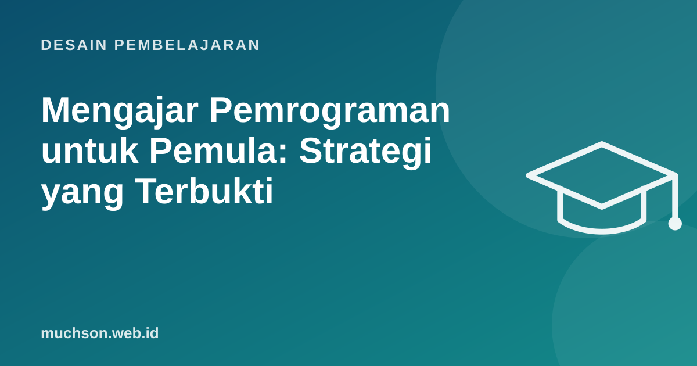

Beranda › Artikel › Desain Pembelajaran
Desain PembelajaranMengajar Pemrograman untuk Pemula: Strategi yang Terbukti
Saya membuat situs Latihan Python untuk mata kuliah pemrograman, tempat mahasiswa menulis dan menjalankan kode di browser lalu naik level dengan menyelesaikan tantangan. Dari pengalaman itu dan dari penelitian pendidikan komputasi, satu pelajaran paling jelas: pemula tidak belajar coding dengan langsung disuruh menulis program dari halaman kosong.

Mengapa pemrograman sulit bagi pemula
- Sintaks yang tidak memaafkan: satu titik dua yang hilang menghentikan segalanya.
- Konsep abstrak: variabel, alur kontrol, dan keadaan program tidak terlihat.
- Beban kognitif tinggi: harus memikirkan masalah, sintaks, dan alat sekaligus.
- Pesan error yang menakutkan dan dalam bahasa Inggris.
Strategi 1: PRIMM, baca dulu baru tulis
PRIMM dikembangkan Sue Sentance dan rekan untuk sekolah. Evaluasi di 13 sekolah dengan 493 siswa usia 11-14 menunjukkan siswa PRIMM mendapat hasil tes lebih baik daripada kelompok kontrol.
# PREDICT: apa yang dicetak program ini? Tulis tebakanmu dulu.
total = 0
for n in [4, 7, 1]:
total = total + n
print(total)
# INVESTIGATE: berapa nilai total setelah putaran kedua?
# MODIFY: ubah agar hanya menjumlah angka yang lebih dari 3.
# MAKE: tulis program yang menghitung rata-rata nilai.Strategi 2: Parsons problems
Potongan kode yang benar diacak; peserta menyusunnya dalam urutan yang tepat. Ini memisahkan latihan logika dan urutan dari beban mengetik sintaks. Penelitian Ericson dan rekan (2017) menemukan mahasiswa menyelesaikan Parsons problems jauh lebih cepat daripada menulis atau memperbaiki kode yang setara, dengan hasil belajar yang serupa.
Susun baris berikut agar program mencetak angka genap dari 1-10:
print(i)
for i in range(1, 11):
if i % 2 == 0:
(Perhatikan juga indentasinya!)Strategi 3: worked example dan fading
Tunjukkan contoh lengkap dengan penjelasan setiap langkah, lalu kurangi bantuan bertahap: contoh lengkap, contoh dengan bagian kosong, soal mirip, soal baru. Ini sejalan dengan teori beban kognitif: pemula belajar lebih efisien dari contoh daripada dari mencoba-coba tanpa arah.
Strategi 4: live coding, termasuk membuat kesalahan
Mengetik kode di depan kelas, bukan menampilkan kode jadi, memperlihatkan proses berpikir: menulis sedikit, menjalankan, membaca error, memperbaiki. Membuat kesalahan secara wajar di depan peserta mengajarkan bahwa error adalah bagian normal dari pemrograman.
Strategi 5: umpan balik otomatis
Tes otomatis yang langsung berjalan saat peserta menekan "jalankan" memberi umpan balik dalam hitungan detik. Rancang pesan untuk kesalahan umum: "Hasilmu 10, seharusnya 12. Apakah angka terakhir di list ikut terjumlah?" jauh lebih membantu daripada "Test failed".
Pemula sering mengira error berarti mereka "tidak berbakat". Normalisasikan: tampilkan statistik bahwa hampir semua orang mengalami error yang sama di latihan itu.
Tanya jawab
Bahasa apa yang terbaik untuk pemula?
Bolehkah pemula memakai AI saat belajar coding?
Berapa lama sampai peserta bisa membuat program sendiri?
Sumber dan bacaan lanjut
- Sentance, Waite, Kallia (2019): Teaching computer programming with PRIMM, Computer Science Education
- Ericson, Margulieux, Rick (2017): Solving Parsons problems versus fixing and writing code, Koli Calling
- Raspberry Pi Foundation: PRIMM pedagogy quick read